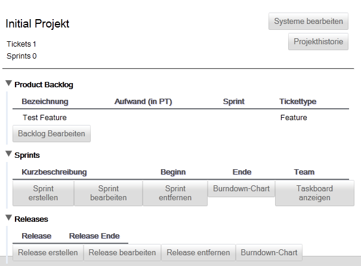
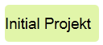
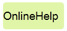
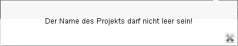
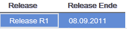
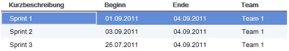
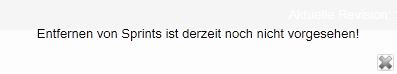

Projekt bearbeiten
Nachdem Sie ein Projekt zur Bearbeitung geöffnet haben (siehe Projektübersicht) erhalten Sie eine Detailansicht zum Projekt, in diesem Beispiel "Initial Projekt".
Direkt unter dem Projektnamen wird Ihnen zusammenfassend angezeigt, wie viele Tickets und Sprints dem Projekt zugeordnet sind.

Sie können nun folgende Aktionen durchführen:
Um ein Projekt umzubenennen, klicken Sie einfach in die Projektbezeichnung und bearbeiten Sie diese entsprechend.
Beispiel
Vorher:

Nachher:

Bestätigen Sie Ihre Eingabe mit der Enter-Taste (auch Return-Taste genannt) oder durch Verlassen des Eingabefeldes.
Sie müssen beachten, dass ein Projekt immer einen Namen haben muss. Leere Eingaben sind nicht gestattet und führen zu der folgenden Fehlermeldung:

Weiterhin dürfen zwei Projekte nicht den gleichen Namen haben. Die Anwendung wird in diesem Fall die folgende Fehlermeldung anzeigen:

Um ein Release zu entfernen, müssen Sie dieses zunächst selektieren:

Anschließend können Sie durch einen klick auf den Button  das ausgewählte Release entfernen.
das ausgewählte Release entfernen.
Konsistenzbedingungen
Todo, Bug512
Um einen Sprint zu entfernen, müssen Sie diesen zunächst selektieren:

Anschließend können Sie diesen durch einen klick auf den Button  den ausgewählten Sprint entfernen.
den ausgewählten Sprint entfernen.
TODO: Achtung! Das Entfernen von Sprints ist derzeit (Revision 2923) noch nicht vorgesehen!

Created with the Personal Edition of HelpNDoc: Free iPhone documentation generator